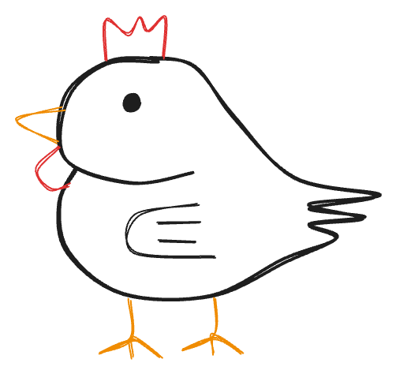
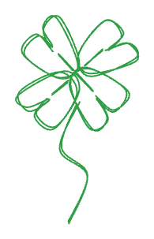

Joseph Igot
Hey! I’m Joseph, an incoming ECE PhD student at Rice University. My research interests are in signal processing and estimation. I like problems that relate to sensing on corrupted data, especially those that prove and validate theoretical guarantees about what information can be extracted.
I previously received my BS in Electrical Engineering and minor in Mathematics from California State University, Fresno in December 2025, as a Lyles College of Engineering Honors Scholar and Dean’s Medalist Nominee (top student in EE within my graduating year).
When not working, I’m an avid otamatone player and enjoy posting covers on my Instagram account @otamataco. Reach out at ji32@rice.edu.


